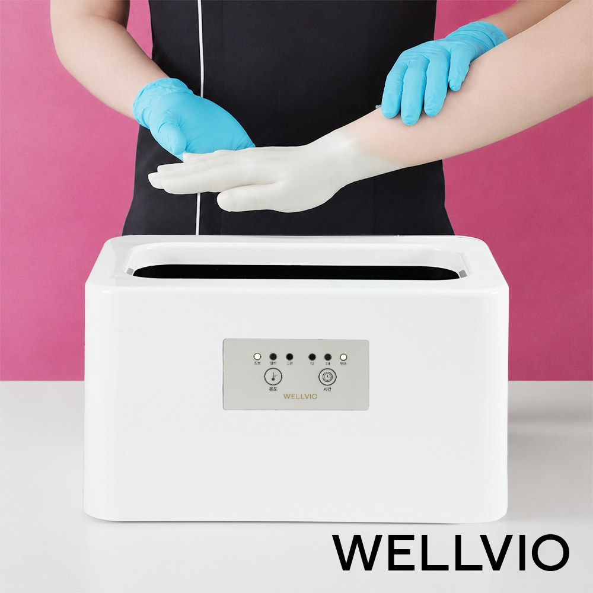
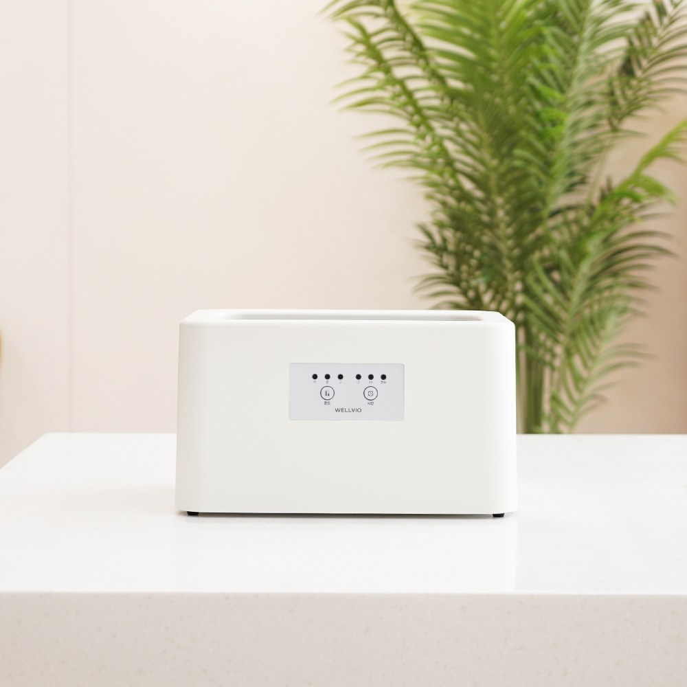
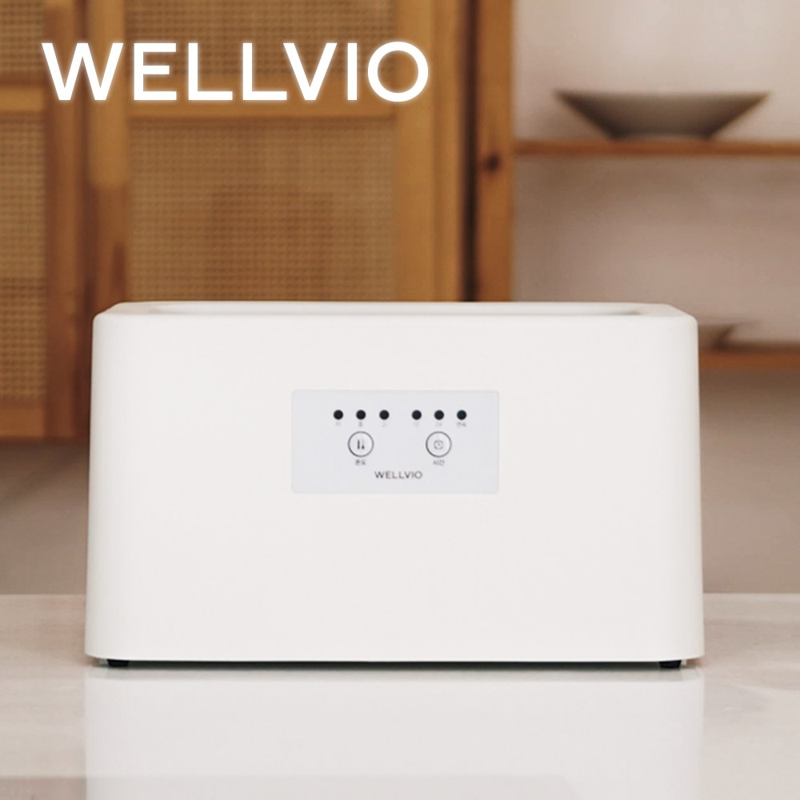
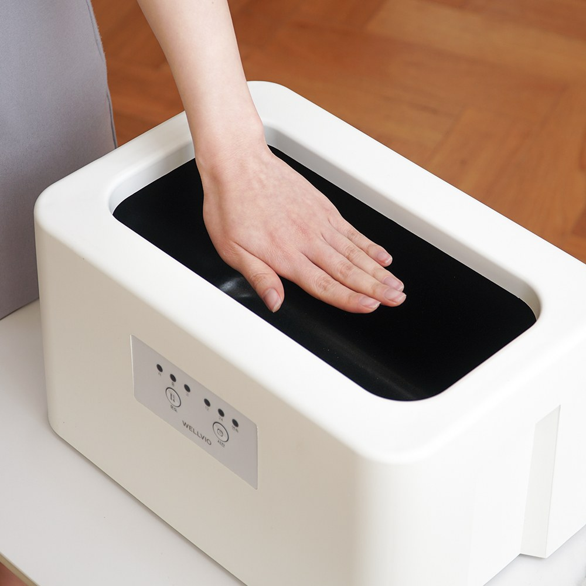
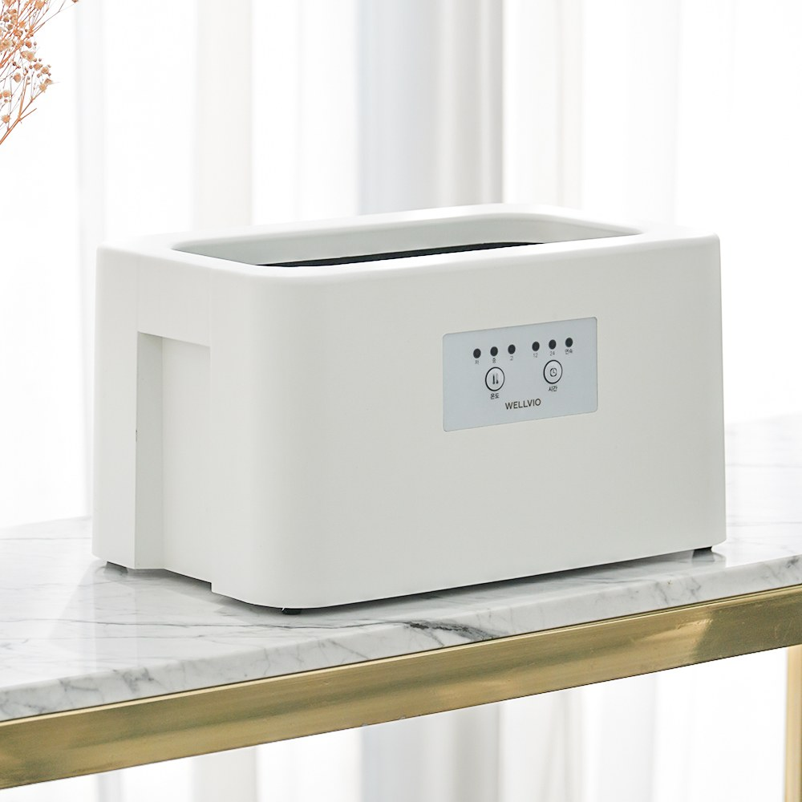

Wellbio Paraffin Bath Review at a Glance
This Wellbio paraffin bath review looks at the WELLVIO (웰비오) Classic Paraffin Bath, a white countertop paraffin bath that's popular in Korea for hand care at home. The maker sells it as a product from a paraffin specialist company, and the Korean listing includes 4 packs of paraffin wax.
The idea is a simple evening ritual: melt the wax, dip your hand, let the warm layer wrap around your fingers, then peel it off.

Design and Controls
The Classic has a white, rounded body with a wide open top that's big enough to dip a whole hand. The front panel has buttons for temperature and time. It's compact enough to sit on a dresser or side table.


How to Use a Paraffin Bath
- Melt the wax: Put the wax in the tub and switch it on. Follow the manual for melting time and temperature.
- Clean and dry your hands: Remove any rings first.
- Dip: Dip your hand in and lift it out so a thin, warm layer coats it. Repeat as the manual directs.
- Rest: Let the layer set for a few minutes. Many people wrap their hand to keep the warmth in.
- Peel: Peel the wax off. About 10 minutes makes a relaxing daily routine.

Key Details
| Item | Details |
|---|---|
| Product | WELLVIO (웰비오) Classic Paraffin Bath, hand therapy |
| Maker | Korean paraffin specialist company |
| Included | Paraffin bath unit + 4 paraffin wax packs (Korean listing) |
| Controls | Temperature and time buttons |
| Design | White, rounded body with a wide open top |
| Use | Dip your hand, let the warm layer set, then peel it off |
We don't have official figures for capacity, wattage or temperature range, so we haven't listed them. Check the product page or manual before you buy.

Pros & Cons
✅ Pros
- Simple dip-and-peel routine you can do at home.
- The wide opening fits a whole hand.
- Temperature and time buttons.
- Wax packs are included in the box.
⚠️ Cons
- You'll need refill wax over time.
- Hot wax needs care, so keep it away from kids and follow the manual.
- We don't have official capacity or wattage figures.
Who It Suits (and Who Should Skip It)
- Great for: Anyone who wants a warm, relaxing hand-care ritual at home in the evening.
- Great for: A thoughtful gift for parents.
- Skip or ask a doctor first: If you have open wounds, skin conditions, poor circulation or reduced sensation in your hands.
Wellbio Paraffin Bath FAQ
What is the Wellbio Classic Paraffin Bath?
It's a home paraffin wax bath for hands, sold in Korea by WELLVIO (웰비오), a paraffin specialist company. You melt paraffin wax in the open tub and dip your hand in.
How do you use a paraffin bath?
Once the wax is melted, dip your hand so a warm layer coats it, let it set for a few minutes, then peel it off. Korean users describe about 10 minutes as a daily routine. Always follow the manual's temperature and safety directions.
Does it come with wax?
The Korean listing we reviewed includes 4 packs of paraffin wax.
Is a paraffin bath a medical treatment?
No. This review covers it as a home relaxation and hand-care device. If you have a medical condition, sensitive skin or reduced sensation, ask your doctor before using heat therapy.
Paraffin Wax Baths for Hands
The Wellbio Classic is sold mainly in Korea, so this link shows similar paraffin hand baths on Amazon.